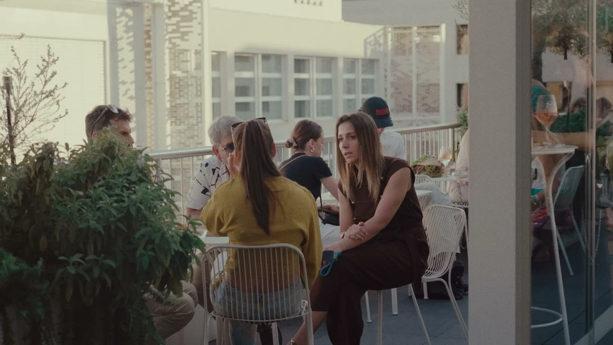
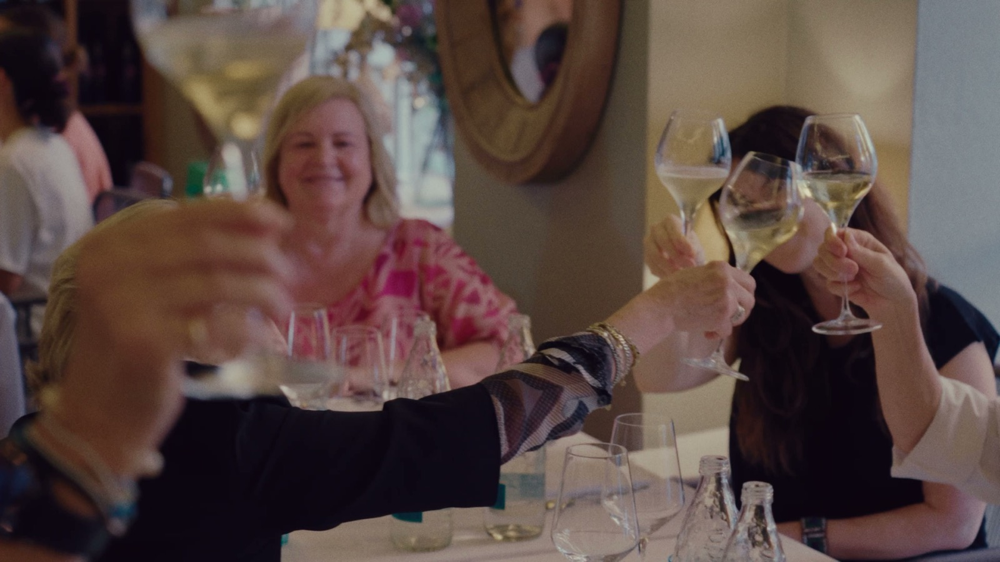

Un ruolo di produzione continuativo
WHITE Milano organizza più edizioni all'anno nel Tortona Fashion District, riunendo diverse centinaia di brand ready-to-wear e accessori all'interno del calendario più ampio della Milano Fashion Week. Francesco è entrato nel team di produzione grazie alla visibilità ottenuta con il lavoro Cettina Bucca / Colombo Fashion Week (vedi il case study Cettina Bucca), e da allora ha coperto più edizioni ricorrenti — la relazione è continuativa, non una singola prenotazione.
Il ruolo è volutamente flessibile: fotografia e video su tutta la fiera, capi, designer, sponsor, talk, eventi serali e interviste, più B-roll e supporto generale alla produzione come parte del team più ampio — non un brief singolo e fisso, ma una risorsa di produzione "jolly" su tutto l'evento.
Il ruolo copre l'intero evento, non solo gli stand — il piano fiera, Magna Pars e il White Dinner, ognuno con il proprio ritmo e la propria luce.



